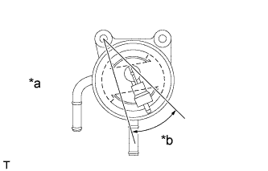
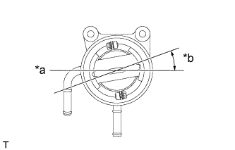
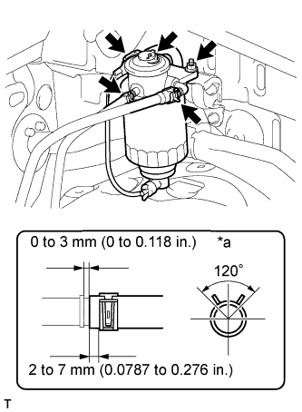

ДАТЧИК ОТСТОЙНИКА ТОПЛИВА > УСТАНОВКА |
| 1. INSTALL LEVEL WARNING SWITCH |
Install a new level warning switch gasket to the level warning switch.
Apply fuel to the level warning switch gasket of the level warning switch.
|  |
Install the level warning switch to the fuel filter element and tighten it by hand.
| *a | Front |
| *b | Within 28.4° |
| 2. INSTALL FUEL FILTER CASE |
Install the fuel filter gasket and fuel filter case to the fuel filter element.
|  |
Tighten the 2 bolts.
Attach the level warning switch connector clamp to the fuel filter cap.
| *a | Front |
| *b | 0 to 20° |
| 3. INSTALL FUEL FILTER ASSEMBLY |
Install the fuel filter with the 2 nuts.
|  |
Connect the level warning switch connector.
Connect the 2 fuel hoses.
| *a | Upper |
| 4. BLEED AIR FROM FUEL SYSTEM |
 |
Using the hand pump mounted on the fuel filter cap, bleed the air from the fuel system. Continue pumping until the pump resistance increases.
| 5. INSPECT FOR FUEL LEAK |
Check that there are no fuel leaks anywhere in the fuel system after performing maintenance.